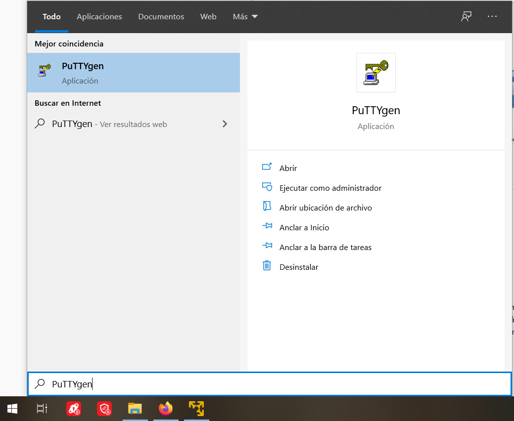
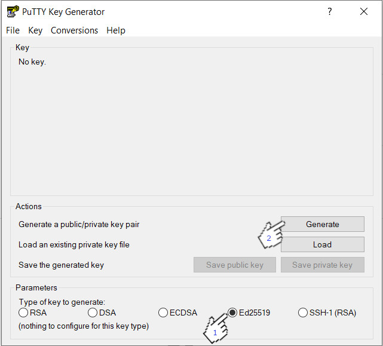
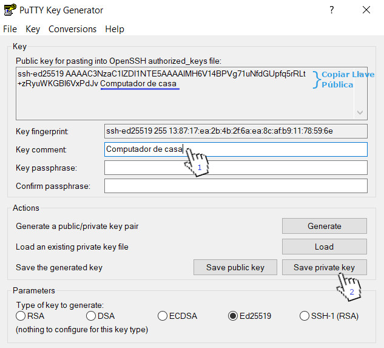
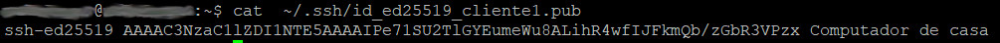
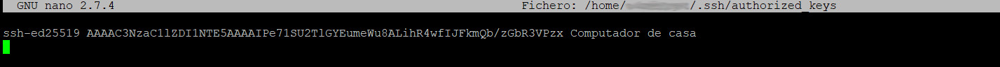
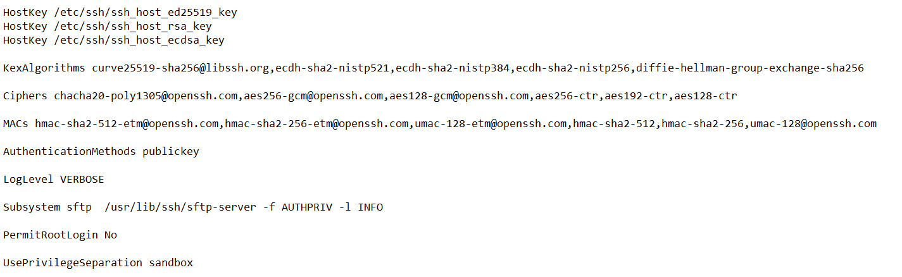
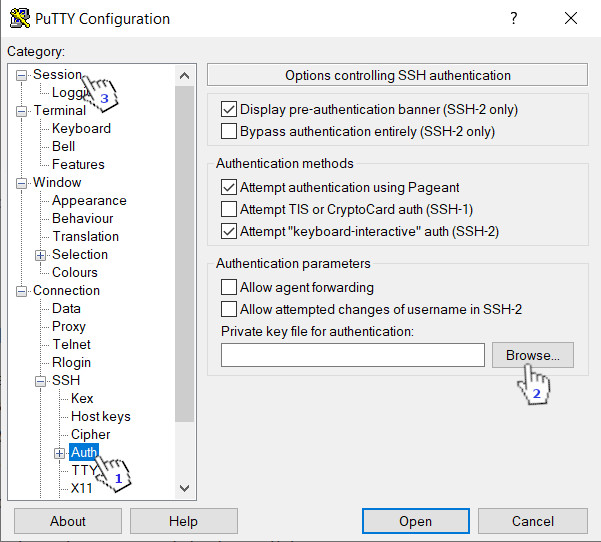
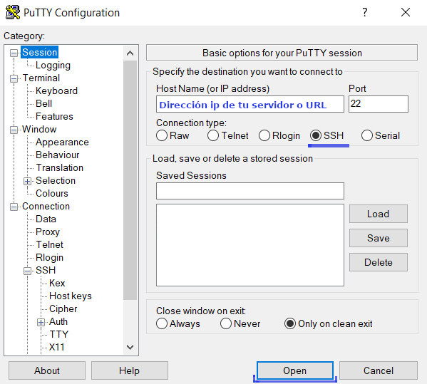
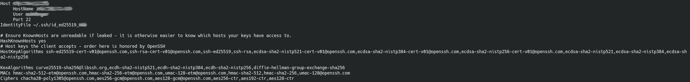

Mejorar la Seguridad en OpenSSH (>=6.7)
En este tutorial se enseñará a configurar OpenSSH (versión 6.7 o mayor) con los parámetros estándar de seguridad propuestos por la fundación Mozilla.
En este tutorial se enseñará a configurar OpenSSH (versión 6.7 o mayor) con los parámetros estándar de seguridad propuestos por la fundación Mozilla.
Muchos de nosotros usamos el protocolo SSH para acceder a nuestros servidores a distancia, es una herramienta útil, pero si no se configura adecuadamente este podría ser un hueco de seguridad que permita a acceso personas no deseadas. Este tutorial usa las configuraciones propuesta por la fundación Mozilla para el programa OpenSSH que gestiona el protocolo SSH, el cual propone sólo el uso llaves públicas y privadas para el inicio de sesión, además de sugerir configuraciones de protocolos de cifrado más seguros. Este tutorial se aplica a servidores SSH que ya se encuentran funcionando ya que no enseña las configuraciones basica para montar un servidor SSH desde el inicio.
¡Advertencia!: Una configuración mal puesta en tu servidor SSH puede hacer que pierdas el acceso remoto por medio de SSH, si puedes acceder físicamente a tu máquina para corregir el problema no hay de qué preocuparse, pero si no puedes, te recomiendo tomar tus propias medida en caso de que algo así suceda.
Creando tu llave pública y privada en Linux
Antes de comenzar con las configuraciones se deberán crear las llaves con la que nuestra maquina cliente accederá a nuestro servidor, para ello desde nuestra maquina cliente con Linux se deberá ejecutar el siguiente comando en tu terminal.
mkdir ~/.ssh
mkdir se usa para crear la carpeta ./ssh . Ya que en algunas distribuciones Linux no se crea por defecto, si en tu caso ya existiese entonces dará un error avisando que el fichero ya existe.
y luego:
ssh-keygen -t ed25519 -f ~/.ssh/id_ed25519_cliente1 -C "Computador de casa"
En el ejemplo se usó un nombre "id_ed25519_cliente1" para el archivo que tendrá las llaves, pero puedes usar el que gustes. En el parámetro de configuración -C es para incluir comentarios dentro del archivo de llaves, en este caso se usó "Computador de casa".
Una vez ejecutado el comando, durante el proceso de creación te pedirá que ingreses tu contraseña para cifrar el archivo (como se muestra abajo), puedes dejarlo en blanco quedando así sin contraseña o puedes asignarle una, si asignas una, cada vez que te quieras conectar a tu servidor deberás ingresar esa contraseña para usar tu llave privada, nunca la olvides.
Generating public/private ed25519 key pair.
Enter passphrase (empty for no passphrase):
Enter same passphrase again:
Your identification has been saved in /home/tuusuario/.ssh/id_ed25519_cliente1
Your public key has been saved in /home/tuusuario/.ssh/id_ed25519_cliente1.pub
Si todo sale bien se crearán dos archivos: "id_ed25519_cliente1" que es el archivo con la llave privada y "id_ed25519_cliente1.pub" que es el archivo con la llave pública.
Los archivos creados estarán ubicados en una carpeta llamada .ssh que está dentro de tu carpeta de usuario, si escribes en la terminal:
ls ~/.ssh
Te mostrara todos los archivos dentro de esa carpeta .ssh, así que deberías visualizarlos ahí.
En Linux, las carpetas que comienzan con un punto en su nombre, ejemplo .ssh por defecto están ocultas, si deseas verlas desde tu explorador debes fijar las opciones para visualizar carpetas ocultas, en algunas distribuciones se pueden habilitar esa opción con la combinación de teclas CTRL+h .
Creando tu llave pública y privada en Windows
En tu computador cliente que accederá a tu servidor, para crear estas llaves se deberá tener instalado el programa PuTTY que además es de licencia libre por lo que puedes usarlo sin restricciones. Una vez instalado deberás buscar PuTTYgen en tu barra de búsquedas, este programa, que es parte del conjunto de herramientas de PuTTY, nos permite crear nuestras propias llaves públicas y privadas desde Windows.
Una vez abierto PuTTY deberemos configurar sus "Parameters" en Ed25519 y luego dar clic en el boton "Generate".
Mientras se crean las llaves, puedes mover el mouse para darle más aletorialidad a la creación de estas. Después de crearse se pasara a una nueva ventana donde mostrara los datos de esta, en ella podemos agregar un comentario al igual como se hacía en Linux, para este ejemplo pondremos "Computador de casa" y veras que se agrega ese comentario a tu llave publica que aparece en la casilla de arriba, esa llave publica (Que además te lo menciona escrito en inglés), es la que debes copiar y agregar posteriormente a tu servidor en su archivo "authorized_keys", de momento lo puedes copiar y dejar guardado en un block de notas.
Ahora solo queda guardar tu llave privada, pero antes si deseas puedes asignar una contraseña a tu llave privada que te pedirá cada vez que te conectes (nunca debes olvidarla), si lo dejas en blanco se guardara sin contraseña, estas contraseñas se ingresan en "Key passphrase" y "Confirm passphrase". Para guardar tu llave privada debes hacer clic en el botón "Save private key" se abrirá una ventana para guardar tu archivo que contiene tu llave privada, elige la ruta que desees y guarda con el nombre que quieras, ten presente poner tu nombre terminando con la extensión .ppk, por ejemplo si deseas guardar el archivo con el nombre computador1, deberás agregar el .ppk, quedando computador1.ppk, luego le das a guardar y listo.
Pasando tus llaves públicas a tu servidor SSH
Ahora debes copiar tu llave publica a tu servidor e introducirlas en el archivo "authorized_keys" que se encuentra en la carpeta ./ssh en la carpeta de usuario de tu servidor, tomaremos por ejemplo los archivos del computador Linux para hacer este paso, pues no todos están familiarizados con este sistema.
Desde el computador cliente que tiene Linux, de los dos archivos creado anteriormente el que contiene la llave publica es el que posee la extensión .pub . Para copiar la llave publica tienes dos opciones o lo abres con tu editor de texto preferido el archivo "id_ed25519_cliente1.pub" y copias el contenido que está dentro de él o haces un cat sobre él en la terminal y luego copias la llave que te muestra. Para el siguiente ejemplo se realiza un cat.
cat ~/.ssh/id_ed25519_cliente1.pub
Eso te mostrara tu llave publica, como en la imagen de a continuación (claro, no será la misma llave).
Toda esa línea es la que deberás copiar y pasarla a tu servidor, como ves, es el mismo formato con la que se muestra tu llave publica en PuTTY desde Windows. Ahora en la terminal de tu servidor con nano abres el archivo "authorized_keys".
nano ~/.ssh/authorized_keys
Si este no se encuentra entonces se creará uno en blanco por defecto. Dentro de él pones tu llave publica, si estas Windows debes seguir este paso y pegar tu llave publica, debería verse como en la imagen de abajo.
Se guardan los cambios (CTRL+o y luego ENTER) y se cierra nano (CTRL+x), ahora tu servidor tiene la llave publica de tu computador cliente y podrá conectarse sin problemas.
Puedes agregar más de una llave publica en el archivo "authorized_keys”. Cada llave publica agregada deberá estar separa por un salto de línea, por ejemplo:
.......
llave publica 1
llave publica 2
llave publica 3
......Así puedes tener computadores con llaves privadas individuales que se conectaran a tu servidor.
Configuración de tu Servidor SSH
Editamos la configuración del archivo "sshd_config" en tu servidor, abrimos con nano (o con tu editor preferido).
mkdir ~/.ssh
mkdir se usa para crear la carpeta ./ssh . Ya que en algunas distribuciones Linux no se crea por defecto, si en tu caso ya existiese entonces dará un error avisando que el fichero ya existe.
y luego:
sudo nano /etc/ssh/sshd_config
Dentro de este archivo de configuración encontraras varios parámetros, tendremos que editar los que ya están y agregar los que falten, así que debes mirarlo detenidamente para no repetir la misma configuración. Las configuraciones que debes editar o agregar en caso de que no estén son las siguientes:
HostKey /etc/ssh/ssh_host_ed25519_key
HostKey /etc/ssh/ssh_host_rsa_key
HostKey /etc/ssh/ssh_host_ecdsa_key
KexAlgorithms curve25519-sha256@libssh.org,ecdh-sha2-nistp521,ecdh-sha2-nistp384,ecdh-sha2-nistp256,diffie-hellman-group-exchange-sha256
Ciphers chacha20-poly1305@openssh.com,aes256-gcm@openssh.com,aes128-gcm@openssh.com,aes256-ctr,aes192-ctr,aes128-ctr
MACs hmac-sha2-512-etm@openssh.com,hmac-sha2-256-etm@openssh.com,umac-128-etm@openssh.com,hmac-sha2-512,hmac-sha2-256,umac-128@openssh.com
AuthenticationMethods password publickey
LogLevel VERBOSE
Subsystem sftp /usr/lib/ssh/sftp-server -f AUTHPRIV -l INFO
PermitRootLogin No
UsePrivilegeSeparation sandbox
El texto de arriba puede verse replegado en tu explorador web, por lo que puse una imagen abajo de como deberían verse estas instrucciones, una por cada línea.
Por Seguridad dejaras por el momento configurado tu servidor SSH para que puedas ingresar con contraseña y llaves, una vez que pruebes que las llaves conectan bien lo configuras para que solo use las llaves.
Para que acepte contraseñas y llaves, la configuración es:
AuthenticationMethods password publickey
Para que acepte solo llaves, la configuración es:
AuthenticationMethods publickey
Una vez editado el archivo con esas configuraciones se guardan los cambios (CTRL+o y luego ENTER) y se cierra nano (CTRL+x).
Ahora ingresas el siguiente comando en la terminal para configurar todos los Diffie-Hellman moduli y así estos moduli sean al menos de un mínimo de 3072-bit-long.
Para introducir el siguente comando en la terminal, se debe estar en el usuario root, en ubuntu sería:
sudo su
Ingresas la contraseña de administrador que te pide y ahora pon el siguiente comando en la terminal.
awk '$5 >= 3071' /etc/ssh/moduli > /etc/ssh/moduli.tmp && mv /etc/ssh/moduli.tmp /etc/ssh/moduli
Todo este comando se debe ingresar en el terminal en una sola línea, sin saltos de línea o se generara un error.
Ahora sale del usuario root.
exit
Ahora reinicias el servidor OpenSSH con un:
sudo systemctl restart ssh
Configuración del cliente SSH con PuTTY (Windows)
Lo importante aquí es tener el archivo que contiene nuestra llave privada en el computador que usaremos para conectarnos al servidor, porque si no lo tienes no te podrás conectar a él y si no puedes acceder físicamente a tu servidor entonces no habrá forma de cambiar esa configuración, ten presente eso.
Si tienes configurado tu servidor SSH para que aceptes contraseña y llaves, podrás acceder de ambas formas, así que no deberías de preocuparte. Si ves que tu llave privada conecta bien entonces puedes configurar ahora tu servidor para que solo acepte llaves, que es lo recomendado.
Para este ejemplo configuraremos el cliente con Putty de Windows.
Abres PuTTY y se mostrara lo siguiente por defecto.

Ahora nos dirigimos a la opción "Auth" que está dentro de la categoría "SSH" como se muestra en la imagen.
En Browser buscas el archivo que contiene tu llave privada con la extensión .ppk, una vez ubicado, vamos a la ventana que estabas antes haciendo clic en la categoría "Session".
Ingresas la IP de tu servidor y el puerto al que te conectaras, selecciona el tipo de conexión en SSH y luego has clic en "Open" se cargara un terminal, si tu llave privada la creaste con una contraseña entonces ahí te la pedirá, la ingresas, después apretas ENTER y ya deberías conectar.
Configuración del cliente SSH con Linux
Para configurar tu cliente en Linux deberás editar el archivo "config" que está en la ruta "/home/tuusuario/.shh", lo abrimos usando el editor de texto nano.
nano ~/.ssh/config
Ahí dentro introduces lo siguiente (teniendo de ejemplo la llave privada ya hecha en los ejemplos anteriores, el id_ed25519_cliente1):
#Configuracion de la conexion
Host aqui.va.la.direccion.ip.o.url
HostName aqui.va.la.direccion.ip.o.url
User tuusuariodelhost
Port aqui.tu.puerto
IdentityFile ~/.ssh/id_ed25519_cliente1
#Configuracion de los protocolos de cifrado
HashKnownHosts yes
HostKeyAlgorithms ssh-ed25519-cert-v01@openssh.com,ssh-rsa-cert-v01@openssh.com,ssh-ed25519,ssh-rsa,ecdsa-sha2-nistp521-cert-v01@openssh.com,ecdsa-sha2-nistp384-cert-v01@openssh.com,ecdsa-sha2-nistp256-cert-v01@openssh.com,ecdsa-sha2-nistp521,ecdsa-sha2-nistp384,ecdsa-sha2-nistp256
KexAlgorithms curve25519-sha256@libssh.org,ecdh-sha2-nistp521,ecdh-sha2-nistp384,ecdh-sha2-nistp256,diffie-hellman-group-exchange-sha256
MACs hmac-sha2-512-etm@openssh.com,hmac-sha2-256-etm@openssh.com,umac-128-etm@openssh.com,hmac-sha2-512,hmac-sha2-256,umac-128@openssh.com
Ciphers chacha20-poly1305@openssh.com,aes256-gcm@openssh.com,aes128-gcm@openssh.com,aes256-ctr,aes192-ctr,aes128-ctr
Se debería ver parecido a la imagen de a continuación:
Una vez editado el archivo con esas configuraciones se guardan los cambios (CTRL+o y luego ENTER) y se cierra nano (CTRL+x).
Ahora te puedes conectar usando:
ssh aqui.va.la.direccion.ip.o.url
y listo, para cerrar tu conexión debes escribir "exit" en el terminal.
Ahora solo con llave privada
Ahora que ya ves que tus llaves funcionan bien, procedes a configurar tú servidor ssh para que solo funcione con ellas
Para eso entras nuevamente a tu servidor usando tus llaves y editas el archivo sshd_config con nano
sudo nano /etc/ssh/sshd_config
y deja la configuracion AuthenticationMethods asi:
AuthenticationMethods publickey
guardas los cambios y reinicia el servidor ssh
sudo systemctl restart ssh
Listo! de ahora en adelante solo podras entrar con tus llaves privadas, haciendo mas dificil la entrada de gente no deseada a tu servidor.
Referencias:
https://infosec.mozilla.org/guidelines/openssh
Si deseas apoyarme para seguir creando más contenido en español, puedes hacerlo delegando en mi Pool.